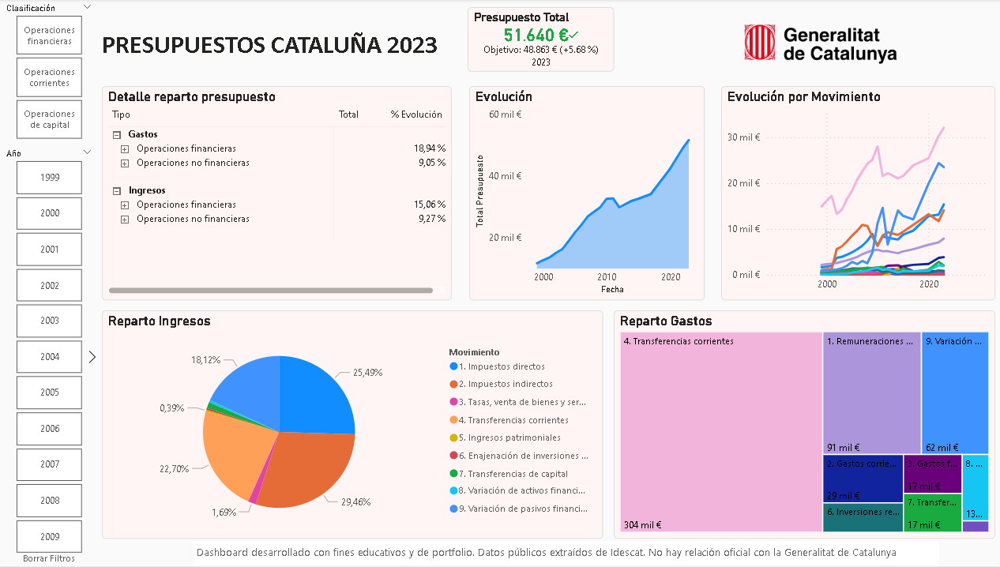

Contexto
Dataset histórico de los presupuestos de la Generalitat de Catalunya desde 1999 hasta 2023, con algunas ausencias de datos. Objetivo: analizar y comparar la evolución de ingresos y gastos, identificar principales variaciones y evaluar la estructura presupuestaria mediante un dashboard interactivo en Power BI.
Objetivos del análisis
- Analizar la evolución histórica de ingresos y gastos públicos.
- Identificar variaciones interanuales (absolutas y porcentuales).
- Evaluar la composición del gasto (personal, capital, transferencias, etc.).
- Medir la dependencia de transferencias corrientes y su impacto en la sostenibilidad presupuestaria.
Estructura del Dashboard
- Resumen financiero: KPIs de ingresos totales, gastos totales y variación interanual, con gráficos de líneas y barras.
- Ingresos: gráficos circulares/anillos por tipo de ingreso y evolución de impuestos y transferencias.
- Gastos: treemap y gráficos de cintas para distribución de gasto y evolución de gastos de personal, transferencias e inversión.
- Comparativa interanual: matriz con diferencias absolutas y porcentuales, KPI de crecimiento YoY.
Técnicas y herramientas
- Power BI: dashboard interactivo con segmentaciones por año y tipo de operación.
- DAX: medidas de gastos e ingresos, diferencias interanuales y time intelligence.
- Power Query: limpieza, normalización y modelado de datos.
- Datos abiertos: extracción desde portal oficial Idescat.
Dataset
Fuente: Idescat – Presupuestos de la Generalitat de Catalunya
Formatos tabular y plano, procesados en Power Query.
Principales insights
- Los ingresos crecieron un +5,7% respecto a 2022, impulsados por impuestos directos e indirectos.
- Los gastos de personal aumentaron un +11,8%, reflejando un mayor esfuerzo en recursos humanos.
- Las transferencias de capital cayeron un -33,6%, reduciendo la inversión en infraestructuras.
- La dependencia de transferencias corrientes sigue siendo elevada (≈48% del gasto total).
Visualizaciones
Página 1 – Resumen financiero
